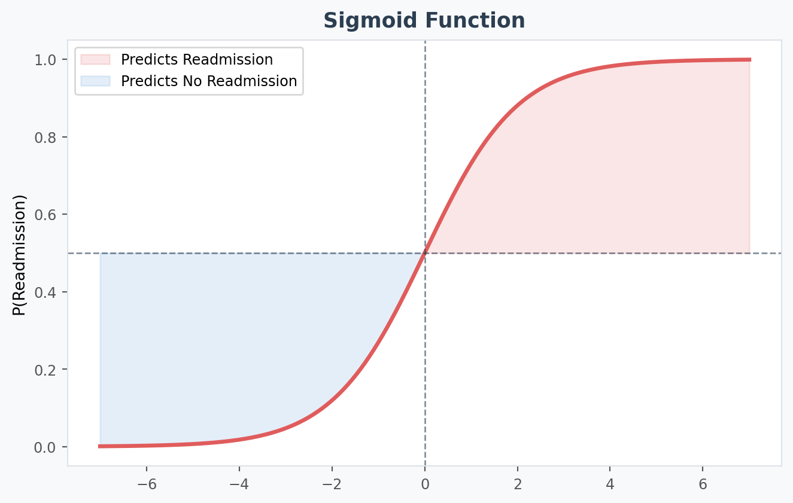
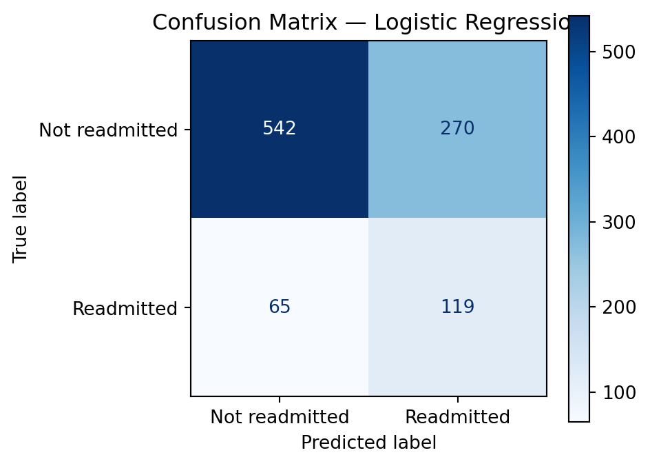
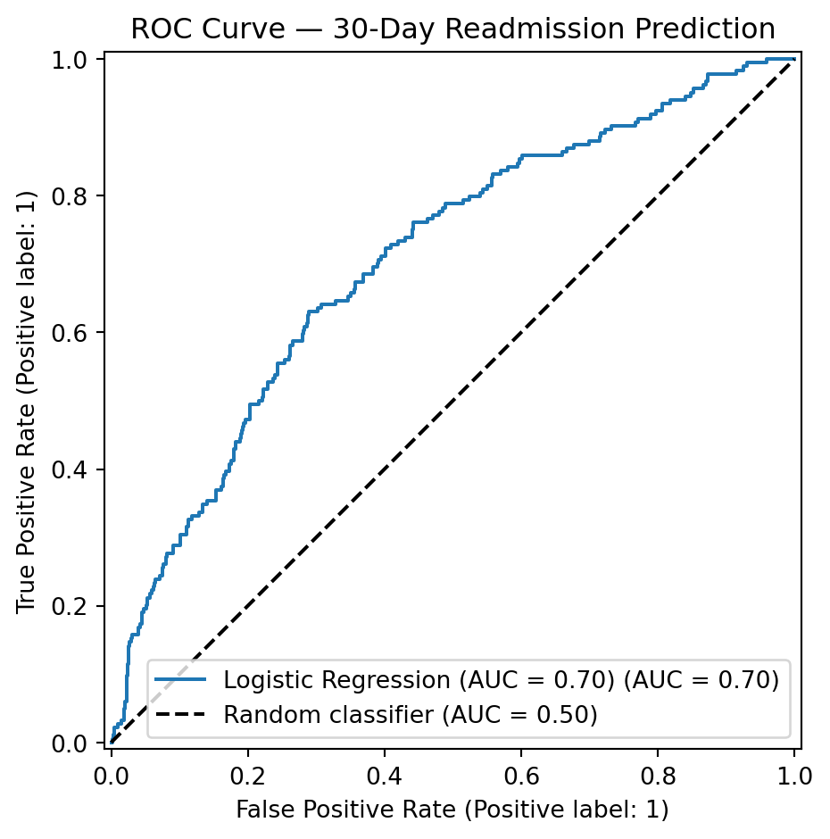
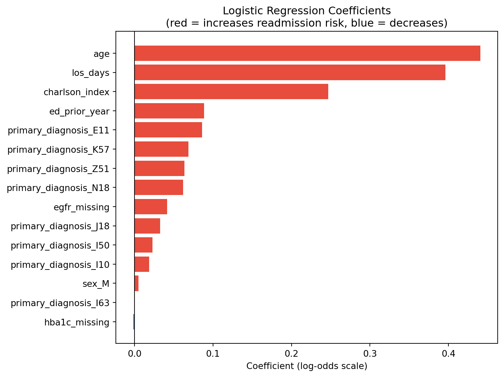

Logistic Regression
⏱ 30 minutes
Logistic regression is the workhorse of clinical prediction modelling. It underpins QRISK3, the Framingham risk score, and hundreds of published clinical risk tools. Before reaching for complex models, logistic regression should always be your first attempt — it is interpretable, fast, and often surprisingly competitive.
How it works
Logistic regression models the log-odds of the outcome as a linear combination of features:
\[\log\left(\frac{P(\text{readmitted})}{1 - P(\text{readmitted})}\right) = \beta_0 + \beta_1 x_1 + \beta_2 x_2 + \ldots\]
Applying the inverse logistic (sigmoid) function gives a probability between 0 and 1 for each patient.
To make this concrete, let’s fit a very simple logistic regression model and see how predicted probability changes.
What this shows:
- The curved line is the logistic regression model.
- Notice how the model cannot predict probabilities below 0 or above 1.
- The relationship is linear on the log-odds scale, but curved on the probability scale.
Preparing the Features
import pandas as pd
import numpy as np
import matplotlib.pyplot as plt
import seaborn as sns
from sklearn.model_selection import train_test_split
from sklearn.preprocessing import StandardScaler
from sklearn.linear_model import LogisticRegression
from sklearn.metrics import (
classification_report, confusion_matrix,
roc_auc_score, RocCurveDisplay, ConfusionMatrixDisplay
)
# Select features
feature_cols = [
"age", "charlson_index", "hba1c", "egfr", "bmi",
"los_days", "ed_prior_year", "imd_decile",
"hba1c_missing", "egfr_missing", # missingness indicators
"sex", "primary_diagnosis"
]
# Encode categoricals and create feature matrix
X = pd.get_dummies(
df[feature_cols],
columns=["sex", "primary_diagnosis"],
drop_first=True
)
# Encode outcome as binary integer
y = (df["readmitted_30d"] == "Yes").astype(int)
print(f"Feature matrix shape: {X.shape}")
print(f"Positive class (readmitted): {y.sum()} / {len(y)} ({y.mean():.1%})")Feature matrix shape: (4977, 20)
Positive class (readmitted): 921 / 4977 (18.5%)# Train / test split — stratified to preserve class balance
X_train, X_test, y_train, y_test = train_test_split(
X, y, test_size=0.2, random_state=42, stratify=y
)
print(f"Training: {len(X_train)} patients ({y_train.mean():.1%} readmitted)")
print(f"Test: {len(X_test)} patients ({y_test.mean():.1%} readmitted)")Training: 3981 patients (18.5% readmitted)
Test: 996 patients (18.5% readmitted)# Scale numeric features (required for logistic regression)
scaler = StandardScaler()
X_train_s = scaler.fit_transform(X_train)
X_test_s = scaler.transform(X_test)Fitting the Model
lr = LogisticRegression(
max_iter=1000, # enough iterations to converge
class_weight="balanced", # upweight minority class (readmitted)
random_state=42,
C=1.0 # regularisation strength (default)
)
lr.fit(X_train_s, y_train)
print("Model fitted successfully.")Model fitted successfully.Evaluating the Model
Predictions
y_pred = lr.predict(X_test_s) # class predictions (0 or 1)
y_prob = lr.predict_proba(X_test_s)[:, 1] # probability of readmissionClassification report
print(classification_report(
y_test, y_pred,
target_names=["Not readmitted", "Readmitted"]
)) precision recall f1-score support
Not readmitted 0.89 0.67 0.76 812
Readmitted 0.31 0.65 0.42 184
accuracy 0.66 996
macro avg 0.60 0.66 0.59 996
weighted avg 0.78 0.66 0.70 996
Reading the classification report
- Recall (Readmitted) = 0.65: we correctly identify 65% of patients who will be readmitted. 35% are missed (false negatives).
- Precision (Readmitted) = 0.31: of everyone we flag as readmission risk, 31% actually are. 69% are false alarms.
- The tension between precision and recall is inherent — adjusting the classification threshold changes this trade-off.
Confusion matrix
fig, ax = plt.subplots(figsize=(5, 4))
ConfusionMatrixDisplay.from_predictions(
y_test, y_pred,
display_labels=["Not readmitted", "Readmitted"],
cmap="Blues", ax=ax
)
ax.set_title("Confusion Matrix — Logistic Regression")
plt.tight_layout()
plt.show()
AUC-ROC curve
auc = roc_auc_score(y_test, y_prob)
print(f"AUC-ROC: {auc:.3f}")
fig, ax = plt.subplots(figsize=(6, 5))
RocCurveDisplay.from_predictions(
y_test, y_prob, name=f"Logistic Regression (AUC = {auc:.2f})", ax=ax
)
ax.plot([0, 1], [0, 1], "k--", label="Random classifier (AUC = 0.50)")
ax.set_title("ROC Curve — 30-Day Readmission Prediction")
ax.legend()
plt.tight_layout()
plt.show()AUC-ROC: 0.705
AUC-ROC: 0.741
Important points
An AUC of 0.74 is consistent with published NHS readmission models. It is meaningfully better than chance (0.50) and indicates genuine predictive signal. However, it also means the model cannot reliably identify individual patients — it is better thought of as a risk stratification tool for population-level interventions.
Interpreting Coefficients as Odds Ratios
The most powerful feature of logistic regression is interpretability. Each coefficient converts directly to an odds ratio:
\[OR = e^{\beta_i}\]
An OR of 1.5 means that for a one-unit increase in that feature (after scaling), the odds of readmission are 1.5× higher — holding all other features constant.
# Build odds ratio table
coef_df = pd.DataFrame({
"Feature": X.columns,
"Coefficient": lr.coef_[0],
"Odds_Ratio": np.exp(lr.coef_[0])
}).sort_values("Odds_Ratio", ascending=False)
print(coef_df.to_string(index=False)) Feature Coefficient Odds_Ratio
age 0.440611 1.553657
los_days 0.396030 1.485914
charlson_index 0.246652 1.279733
ed_prior_year 0.088533 1.092571
primary_diagnosis_E11 0.086083 1.089897
primary_diagnosis_K57 0.068831 1.071256
primary_diagnosis_Z51 0.063645 1.065714
primary_diagnosis_N18 0.061936 1.063895
egfr_missing 0.041597 1.042474
primary_diagnosis_J18 0.032864 1.033410
primary_diagnosis_I50 0.022819 1.023082
primary_diagnosis_I10 0.018597 1.018771
sex_M 0.005201 1.005214
primary_diagnosis_I63 0.000180 1.000180
hba1c_missing -0.001526 0.998475
hba1c -0.011363 0.988701
primary_diagnosis_J44 -0.029291 0.971134
bmi -0.087669 0.916064
imd_decile -0.143843 0.866023
egfr -0.293086 0.745958# Visualise top 15 features
top_feats = coef_df.head(15).sort_values("Coefficient")
plt.figure(figsize=(8, 6))
colors = ["#E74C3C" if v > 0 else "#4A90D9" for v in top_feats["Coefficient"]]
plt.barh(top_feats["Feature"], top_feats["Coefficient"], color=colors)
plt.axvline(0, color="black", linewidth=0.8)
plt.title("Logistic Regression Coefficients\n(red = increases readmission risk, blue = decreases)")
plt.xlabel("Coefficient (log-odds scale)")
plt.tight_layout()
plt.show()
Interpreting odds ratios carefully
Odds ratios are marginal estimates — each assumes all other features are held constant, which is often unrealistic for correlated clinical variables. A large OR for hba1c_missing does not mean “absence of HbA1c causes readmission” — it reflects that patients without HbA1c measurements differ systematically in other ways (e.g. less-monitored, more acute admissions).
Exercise 9
The default classification threshold is 0.5 — patients with predicted probability ≥ 0.5 are classified as “Readmitted”. But this may not be optimal.
- Compute predicted probabilities (
y_prob) for the test set — you already have these. - Try thresholds of 0.3 and 0.4 — for each, re-compute
y_predusing(y_prob >= threshold).astype(int)and print the classification report. - How does sensitivity (recall) change as you lower the threshold? What happens to precision?
Answer
for threshold in [0.3, 0.4, 0.5]:
y_pred_t = (y_prob >= threshold).astype(int)
report = classification_report(y_test, y_pred_t,
target_names=["Not readmitted", "Readmitted"],
output_dict=True)
recall = report["Readmitted"]["recall"]
precision = report["Readmitted"]["precision"]
print(f"Threshold {threshold:.1f}: Recall={recall:.2f}, Precision={precision:.2f}")Threshold 0.3: Recall=0.91, Precision=0.21
Threshold 0.4: Recall=0.83, Precision=0.25
Threshold 0.5: Recall=0.65, Precision=0.31Lowering the threshold catches more readmissions (higher recall) but at the cost of more false alarms (lower precision). The right threshold depends on the clinical context — in a low-cost intervention (phone call follow-up), a lower threshold may be acceptable. For a resource-intensive intervention (specialist outpatient appointment), higher precision is preferred.